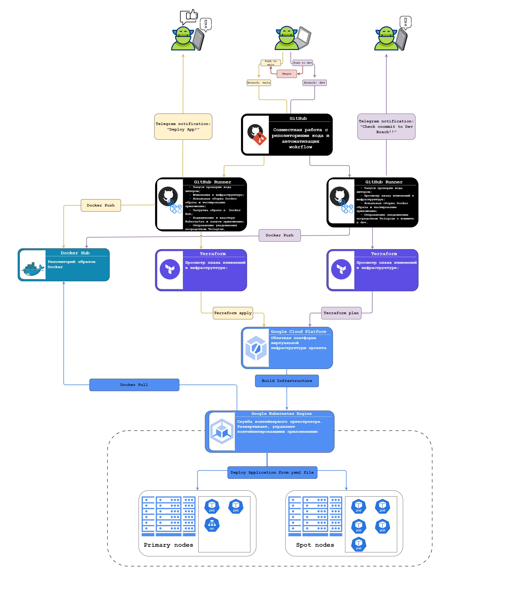

Добро пожаловать на страницу выпускной работы по курсам TeachMeSkills – DevOps инженер!
Используемые инструменты:
- Docker
- Docker Compose
- Docker Hub
- Google Cloud Platform
- Google Kubernetis Engine
- Terraform
- GitHub
- GitHub Actions
Общее описание проекта:
Общая топология проекта:

Проект состоит из двух веток: main и dev.
[Ветка dev]:
Ветка dev предназначена исключительно для проверки внесенных изменений и не влияет на активный проект. При коммите в ветку dev выполняются следующие шаги:
- Осуществляется проверка с использованием Linter конфигурационных файлов terraform, dockerfile и yaml.
- Устанавливаются необходимые инструменты для тестирования приложения, такие как terraform, Docker Compose и Google Cloud CLI.
- В директории, содержащей файлы terraform, инициализируются провайдеры и загружаются основные модули для создания инфраструктуры с помощью команды "terraform init".
- Осуществляется просмотр плана изменений, которые планируется применить Terraform к инфраструктуре с помощью команды "terraform plan".
- Создается Docker-образ на основе указанного в Dockerfile файла.
- С помощью Docker Compose запускается контейнер из созданного образа.
- Производится проверка путем отправки HTTP-запросов к контейнеру Docker. Если возвращаемый HTTP-код равен 200, проверка считается успешной.
- Контейнер останавливается, а Docker-образ удаляется.
- Создается Docker-образ на основе указанного в Dockerfile файла.
- Образ загружается в репозиторий Docker Hub.
- Выполняется предварительная проверка авторизации на Docker Hub для возможности загрузки образа в репозиторий.
- Отправляются уведомления в Telegram о новом коммите, внесенном в ветку.
[Ветка main]:
Ветка main имеет непосредственное влияние на активный процесс развертывания инфраструктуры в облачном провайдере и конфигурацию, а также на публикацию приложения в облаке. Запуск GitHub Actions происходит при коммите в основную ветку (main) или при слиянии (merge) dev ветки с основной. В процессе выполнения запуска GitHub Actions выполняются следующие шаги:
- Осуществляется проверка с использованием линтера для конфигурационных файлов terraform, dockerfile и yaml.
- Устанавливаются необходимые инструменты для тестирования приложения, такие как terraform, Docker Compose и Google Cloud CLI.
- В директории, содержащей файлы terraform, инициализируются провайдеры и загружаются основные модули для создания инфраструктуры с помощью команды "terraform init".
- Осуществляется просмотр плана изменений, которые планируется применить Terraform к инфраструктуре с помощью команды "terraform plan".
- Применяются изменения, описанные в Terraform-конфигурации, к инфраструктуре Google Cloud Platform с помощью команды "terraform apply".
- Создается Docker-образ на основе указанного в Dockerfile файла.
- С помощью Docker Compose запускается контейнер из созданного образа.
- Производится проверка путем отправки HTTP-запросов к контейнеру Docker. Если возвращаемый HTTP-код равен 200, проверка считается успешной.
- Контейнер останавливается, а Docker-образ удаляется.
- Устанавливается Google Kubernetes Engine Authentication Plugin для работы с кластером Kubernetes GKE.
- Устанавливается набор библиотек Google Cloud SDK для взаимодействия с облачной платформой.
- Проверяется подключение к кластеру Google Kubernetes Engine.
- Выполняется предварительная проверка авторизации на Docker Hub для возможности загрузки образа в репозиторий.
- Создается Docker-образ на основе указанного в Dockerfile файла.
- Образ загружается в репозиторий Docker Hub.
- Приложение разворачивается на основе образа, расположенного в репозитории Docker Hub, с использованием yaml-файла.
- Отправляются уведомления в Telegram о публикации приложения.